如何读一枚棋子
棋子通常表示一个历史单位。玩家首先看它属于哪一方，再看兵种和数值。多数作战单位都能移动和战斗；补给单位、道路模式、雷区、状态标记则用来改变局面或记录规则状态。

- 番号 / 名称
- 识别具体历史部队，例如第 7 装甲。
- 兵种符号
- 决定它按装甲、侦察、步兵、工兵等哪类规则行动。
- 6（横线左侧）
- 战斗强度。攻击或防御时，将这个数值计入己方总战斗强度；它可能受到补给、地形和道路模式等规则修正。
- 10（横线右侧）
- 移动力。表示该单位在一次移动阶段中最多可以花费 10 点 MP；进入不同地形和切换道路模式会消耗 MP。
作战单位
作战单位是地图上的主力棋子，通常拥有战斗强度和移动力。它们可以移动、攻击、防御、控制相邻格，并影响补给线。
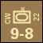
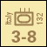
高机动、高战斗力的机械化作战单位。通常能在机械化移动阶段再次移动，但参加本玩家回合战斗阶段攻击后不能再进行机械化移动。
示例：Panzer、CW Arm、Italian Tank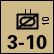
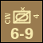
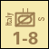
属于机械化单位，移动力通常较高。用于快速推进、占位、威胁补给线和形成控制区。
示例：Recon、CW Recon、Italian Recon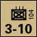
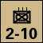
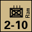
介于装甲和普通步兵之间的机动战斗单位。它们通常按机械化规则移动，也会受到道路模式和补给规则影响。
示例：PzG、Mech Infantry
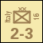
最常见的非机械化作战单位。它们移动较慢，但适合守点、维持战线、占据关键地形和承担防御。
示例：Indian、CW、Italian Infantry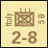
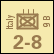
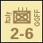
包括 Bersaglieri 和 GGFF 等单位。它们在地图上按具体棋子数值行动，是否机械化以棋子和场景数据为准。
示例：Bersaglieri、GGFF法国、希腊、波兰、澳大利亚、新西兰、南非、印度等单位都按作战单位规则使用，区别主要在番号、国籍和数值。
示例：French、Greek、Polish Infantry非机械化兵种
非机械化单位不能在机械化移动阶段移动。它们进入道路模式的时机也更受限制，通常只能在初始移动阶段进入道路模式。
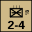
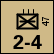
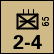
按非机械化作战单位处理。它们是特殊来源的步兵单位，但在移动、战斗、堆叠和补给上仍看具体规则。
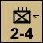
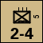
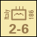
属于步兵类作战单位。可攻击、防御、形成控制区，按棋子数值和补给状态结算。
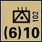
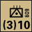
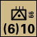
规则书将其列入非机械化单位。它们按棋子上的战斗强度和移动力参与地图行动。

可进入敌方雷区并清雷；若本玩家回合未清雷，可协助攻击敌方雷区内单位，抵消雷区防御加倍。
补给与工程棋子

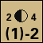
不是普通战斗单位。它们用于延伸补给网络，移动阶段独立，不能像战斗单位那样攻击。
表示道路上补给已推进到哪里。道路补给规则会根据该标记和道路是否被敌军/ZOC/雷区阻断来判定补给。
标记棋子
标记棋子不一定代表部队，更多用于记录地图状态。它们会影响移动、战斗、补给或界面显示。

影响进入移动费用和战斗防御。攻击位于己方雷区中的单位时，防御强度通常加倍，工兵可抵消这种加成。

表示单位以道路行军队形移动。移动距离大幅提高，但战斗强度减半，前后道路空间必须保持空置。
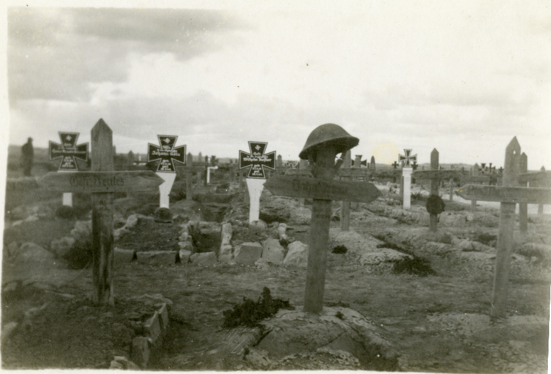
用于记录无补给、孤立、消灭等状态。补给状态会直接影响移动、攻击、防御和是否会因孤立被移除。
用于记录当前 Game-Turn 和行动方。场景长度、首回合特殊规则和最终结算都依赖回合数。
图表与界面工具

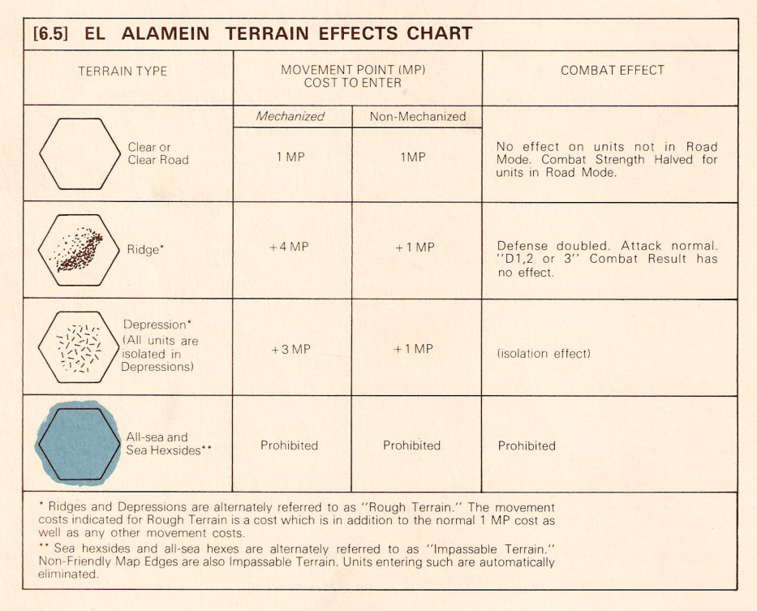
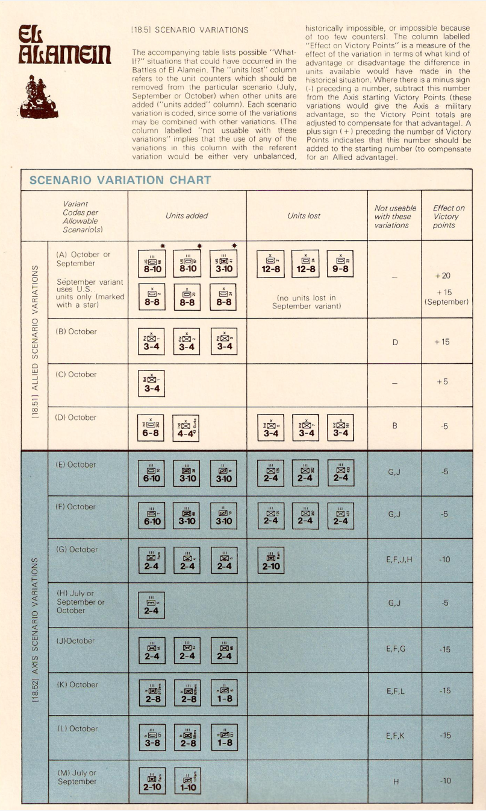
CRT 用于战斗结算，TEC 用于地形移动和战斗修正，场景变体表用于可选设置。
战斗和部分清雷判定使用 1d6。战斗时根据比值栏和骰点在 CRT 上得到结果。
这些图标用于网页操作或 VASSAL 工具，不代表地图上的作战单位。它们帮助移动、缩放、显示或隐藏信息。